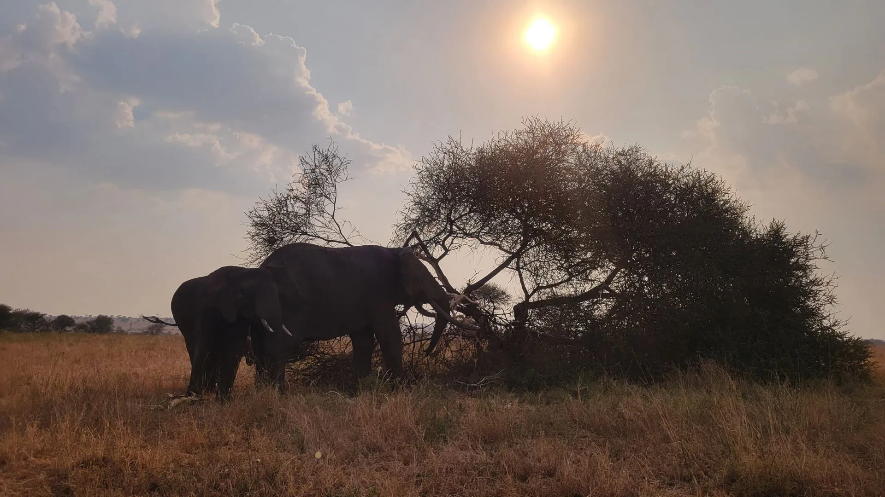
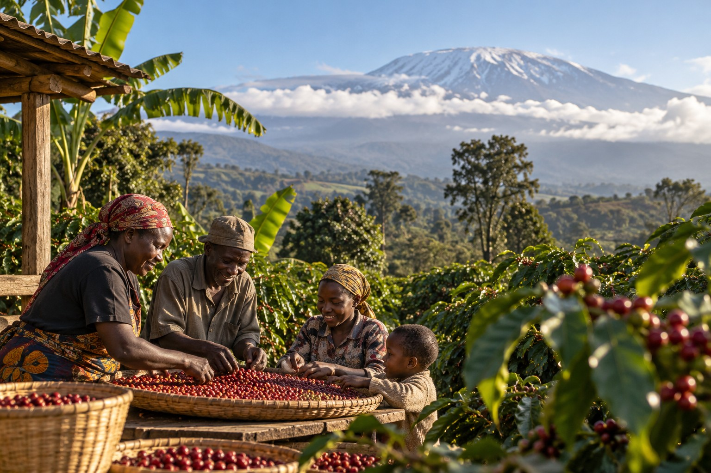
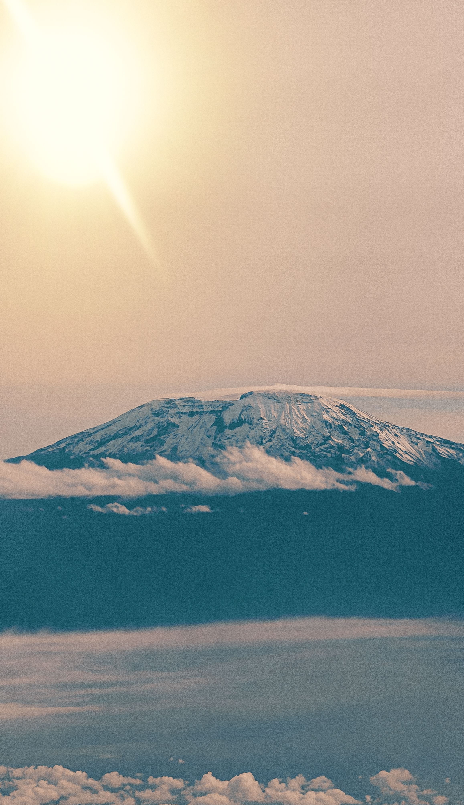
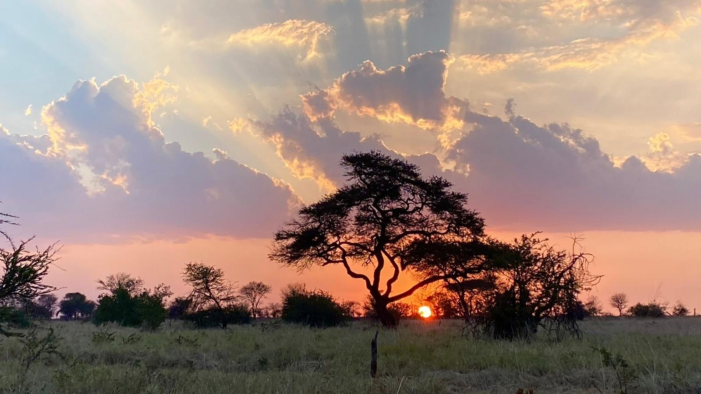
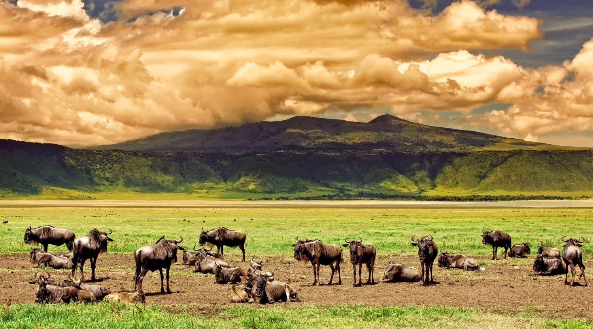
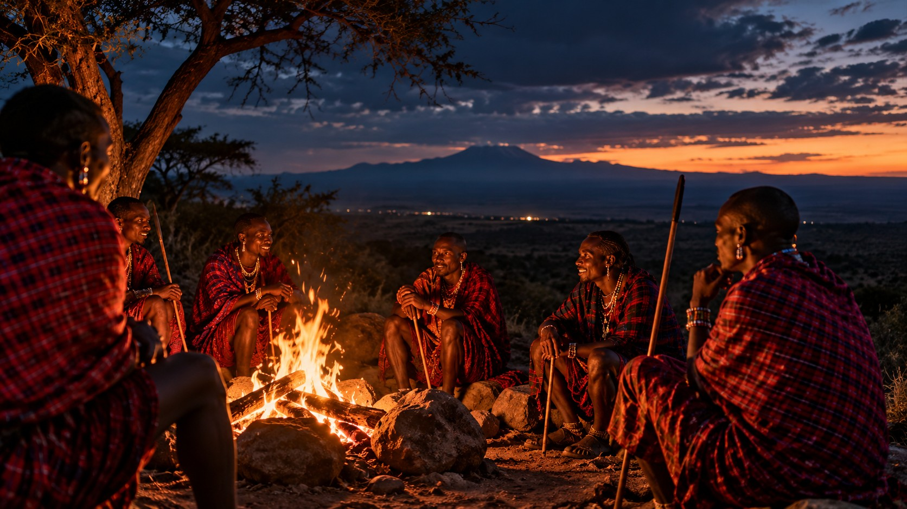
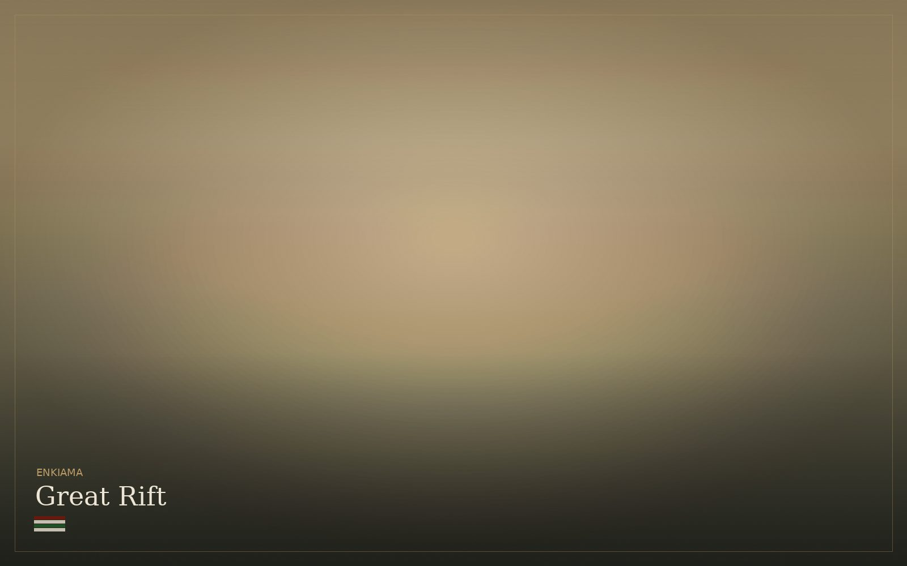
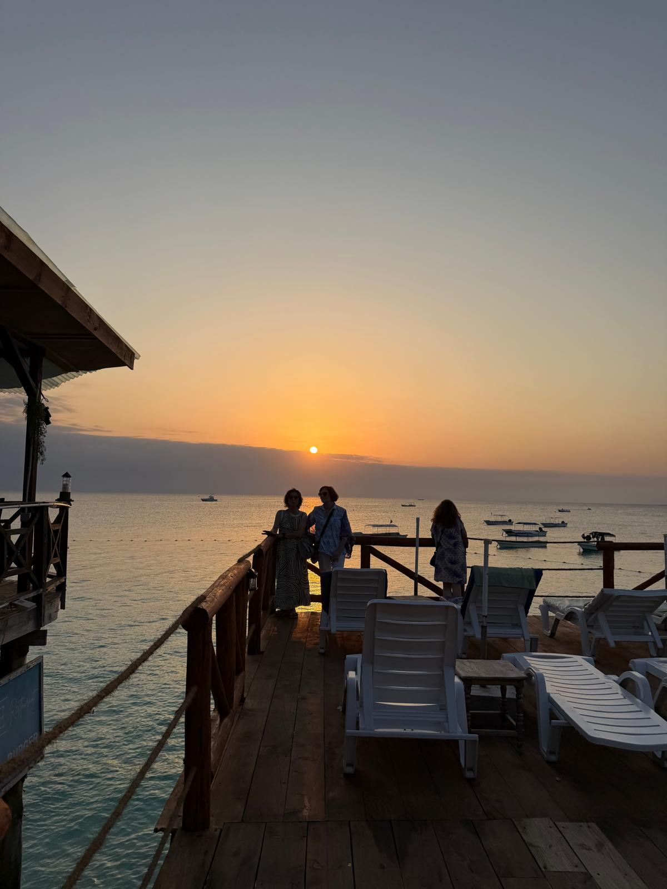
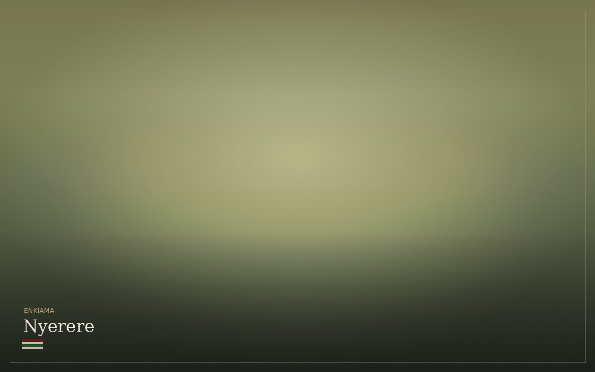
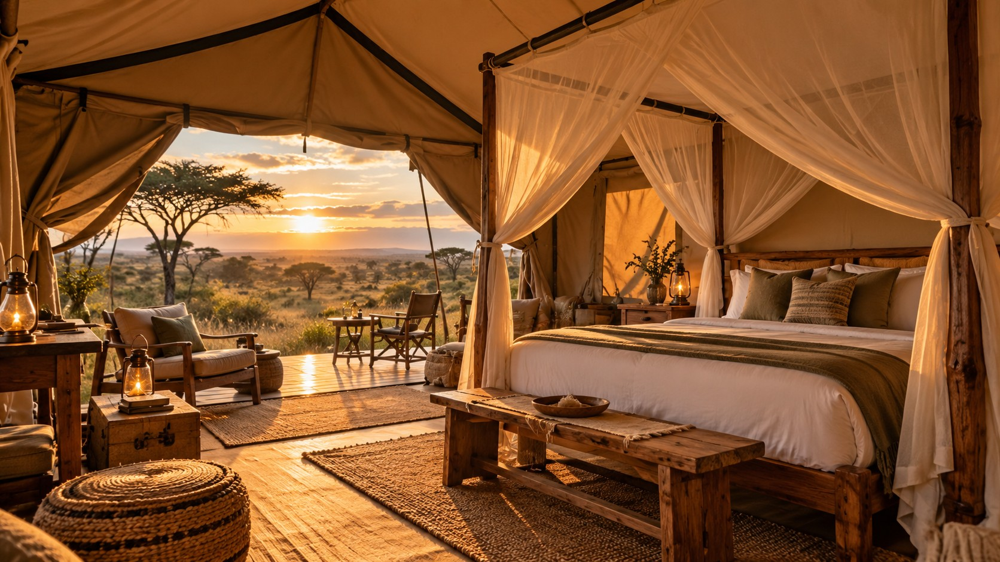

Tanzania · Private journeys · From mountain to coast
Private journeys through Tanzania — shaped around season, distance, pace and the people travelling.
Based in Tanzania · journeys shaped here
Enkiama plans private journeys for local and international guests. We work from the country itself — its seasons, distances, people and changing conditions. That knowledge shapes what we combine, what we leave out, and where we slow down.

Altitude, season, distance and landscape change Tanzania quickly. These six worlds are not a checklist; they are the building blocks of a route. Move through them to see what belongs together.
Kilimanjaro, Mount Meru and the highland country around them. Trekking routes, Chagga communities, coffee farms, volcanic soils and cooler mountain landscapes that can sit naturally before or after safari.


The Serengeti and Tarangire offer very different safari rhythms. One follows migration and huge open plains; the other is shaped by elephants, baobabs and seasonal water. The route changes with the month, wildlife movement and the pace your group wants.
A collapsed volcano with a dense concentration of wildlife, alkaline lakes and steep forested walls. The crater can be a focused day inside a longer northern route, timed around the descent, crowd levels and where you travel next.


Moshi and Arusha after dark. Chagga farms on Kilimanjaro’s lower slopes. Maasai communities around the highlands. Local food, markets and everyday places between the headline destinations. These experiences are built through introductions and context, not staged as a separate “cultural stop.”
North of Ngorongoro, the land opens into escarpments, alkaline lakes and volcanic country. Lake Natron sits beneath Ol Doinyo Lengai. It is a harder, quieter landscape and one of the strongest ways to extend the northern circuit beyond the familiar park sequence.

Zanzibar and Pemba add a different pace to a mainland journey: reef, warm water, Swahili food and Stone Town’s layered history. The coast can be a few quiet days at the end, or a substantial part of the journey in its own right.

Most private journeys combine two or three of these worlds. Season, driving time, internal flights, group pace and budget decide what belongs together.
Illustrative northern route
This 12-day example shows how mountain country, Arusha, Tarangire, the volcanic Rift, Serengeti and Ngorongoro can connect without reducing the journey to a park-to-park circuit.
Kilimanjaro country and Arusha create a softer arrival before the longer wildlife section begins.
Natron and Lengai change both terrain and pace before the route enters the Serengeti.
Serengeti comes first; Ngorongoro closes the wildlife section in a completely different landscape.
One group at a time
Before you travel, one proposal brings together the route, stays, key people, inclusions and total cost. The same plan carries through from arrival to departure.

Where the day ends
We choose accommodation after the route is clear. Location, transfer time, atmosphere and budget matter more than choosing a property by reputation alone.

Does the property make the route better, or simply add another transfer?
Does it suit this part of the journey — active, quiet, remote or social?
Does what it adds justify what it costs for this particular group?
A wildlife day, a mountain route and a community visit do not require the same person. We build the team around the places in the itinerary, and name the relevant guides or specialists in the proposal.
A naturalist or safari guide suited to the ecosystem, season and pace of the route.
A host or local guide where an introduction adds context that a general safari guide cannot.
Mountain, marine, cultural or other expertise brought in when the route genuinely needs it.
A useful first brief
You do not need to arrive with an itinerary. A group, a rough travel window and the part of Tanzania that matters most are enough for us to begin shaping a route.
Couple, family, friends or solo. Group size changes the shape of the route.
A month or season is enough to begin reading wildlife, weather and availability.
Safari, Kilimanjaro, Rift Valley, local life, coast — or a combination.
Timing, budget and the shape of the journey are discussed before the proposal is finalised.
Wildlife, weather, availability and route pace change with the month.
Accommodation, flights, private vehicles and duration move the total most.
The proposal states the stays, transport, guiding, activities and exclusions before you commit.
Continue exploring
Karibu
WhatsApp or email is enough. A rough month and a little context are all we need to start.